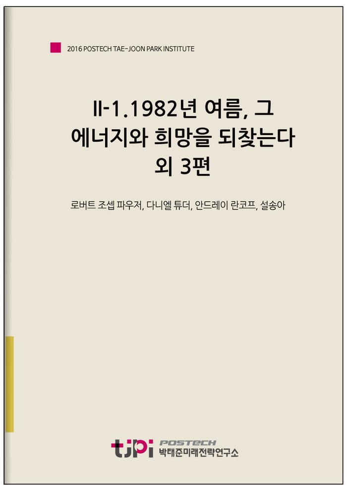

저자 로버트 조셉 파우저, 다니엘 튜더, 안드레이 란코프, 설송아발간일 2016.09.30

요 약
[1982년 여름, 그 에너지와 희망을 되찾는다]
한국사회는 위기를 스스로 느끼지 않기 때문에 극복할 노력보다 진단을 계속하면서 주변적 문제에 대해서만 노력하고 있다. 그래서 해결책을 찾는 데에 먼저 필요한 것은 위기의식이다.
[냉소주의를 넘고 비교를 내려놓는다면]
한국사회는 성공의 의미를 바꿔야 한다. 정부에게 어느 정도 기대하는 것은 당연하지만, 정부가 삶을 행복하게 만들어 줄 수는 없다. 창의적인 분야, 소규모 창업, 여행을 위한 휴가 사용, 명문대가 아닌 대학 졸업 등이 더 인정받는 사회가 돼야 한다. 생산직이 더 인정받는 사회가 돼야 한다. 연봉이 아닌 맡은 일을 해내는 능력 그 자체로 인정받는 사회가 돼야 한다.
[미래 한반도를 구원하는 통일준비]
통일에 대한 우려는 근거가 있지만, 그럼에도 장기적으로 말하면 남북한의 통일은 아주 좋은 결과를 불러올 수 있다. 다른 어떤 것보다 중요한 것은 통일에 대한 솔직한 토론이다. 이 토론을 중심으로 통일 비용을 줄이고, 통일의 모순과 혼란을 완화할 수 있는 정책을 준비해야 한다.
[‘통일’ 주역인가 ‘종북’ 약자인가]
탈북자의 정착문제가 왜 여전히 사회문제가 되는지, 한 번쯤 탈북자의 시선으로 보면 어떨까.
일반 시민들의 편견은 그래도 넘어갈 만하다. 솔직한 반응이기도 해서 한국사회에 적응하는 데 때로는 원동력이 되기도 한다. 그러나 한국정부의 탈북자 편견이 자연스럽게 은폐되는 것은 또 하나의 분단을 만드는 요인으로 작용한다.
-------------------------------------------------------
포스텍 박태준미래전략연구소는 2016년 실사구시적인 미래전략연구 주제의 하나로서 ‘더 행복한 한국사회로 나아가기 위해 가장 중요한 과제가 무엇인가’를 선정하였으며, 토박이 한국인이 아닌 분들의 목소리를 경청해보는 것이 더 객관적이고 효과적일 수 있다는 판단을 내렸습니다. 한국에 대해 잘 알고 있는 필자들은 ‘한국사회의 행복문제’를 어떤 시각으로 읽어내고, 이에 대해 어떤 대안을 갖고 있을까요?
<21개국 36인이 참여한 에세이를 엮어 '대한민국 행복지도' 미래전략연구총서(4)으로 발간되었습니다.
미래전략연구총서4 '대한민국 행복지도'
도서보기
목 차
1982년 여름, 그 에너지와 희망을 되찾는다
- 로버트 조셉 파우저(미국)
냉소주의를 넘고 비교를 내려놓는다면
- 다니엘 튜더(영국)
미래 한반도를 구원하는 통일준비
- 안드레이 란코프(오스트레일리아)
‘통일’ 주역인가 ‘종북’ 약자인가
- 설송아(탈북 작가)
내 용
[2016 전문가 에세이] II-1.1982년 여름, 그 에너지와 희망을 되찾는다외 3편
로버트 조셉 파우저, 다니엘 튜더, 안드레이 란코프, 설송아
1982년 여름, 그 에너지와 희망을 되찾는다
로버트 조셉 파우저(미국)
한국과 처음 인연을 맺은 것은 1982년 여름이다. 당시 미시간대학에서 일본어를 전공하고 있었는데, 일본어를 연습하기 위해서 여름방학을 일본에서 보내기로 했다. 미시간대학에 한국인 유학생 친구 몇 명이 있었는데, 한국이 일본에 가깝다고 해서 기회가 있으면 가보라고 권했다. 그 말을 듣고 일주일 동안 한국을 여행하기로 했다.1982년 8월의 한국은 지금의 한국과 많이 달랐다. 1960년대 말부터 시작됐던 경제성장 때문에 농사 중심인 후진국에서 도시 중심인 중진국에 진입했다. 물질적으로 생활수준이 지금에 비해서 많이 떨어졌고 어렵게 사는 사람도 많았다. 1980년 광주민주화운동과 독재정권의 탄압 때문에 정치적으로 어려운 상황이었고 민주주의가 먼 꿈이었다. 그런데 여러 어려움 속에 희망도 컸다. 지속적 경제성장 때문에 도시 중심 중산층이 형성되기 시작했고 1988년 하계 올림픽을 서울에서 개최할 결정이 미래에 대한 기대의 상징이 되었다. 1982년 여름은 짧은 여행이었지만, 2000년대에 ‘다이내믹 코리아’의 밑받침이 된 한국의 독특한 에너지와 미래에 대한 희망을 크게 느꼈다.그 후에 한국과 인연이 갈수록 깊어졌다. 1982년 방학을 마치고 미국에 돌아가 계속 일본어를 공부했다. 그런데 한국 생각이 자주 나고 유학생 친구를 만나면서 한국어를 공부하고 싶은 마음이 커졌다.
그래서 1983년에 미시간대학을 졸업하고 서울대학교 언어학연구소(현재 언어교육원)에서 1년간 집중적으로 한국어를 공부했다. 그 뒤 미국에 돌아가서 언어학 석사를 받고 다시 한국에 와서 7년간 영어를 가르쳤다. 학생운동이 가장 심했던 시절에 고려대학교 영어교육과 강사로 영어를 가르치기도 했다. 1993년에 박사를 받으러 아일랜드에 가서 공부하고 논문을 쓰는 가운데 일본에서 영어 전임 교수를 할 수 있는 기회가 생겼다. 일본에서 13년간 바쁘게 교수 생활을 했다. 교토 문화생활을 즐기며 명문대 교토대학 교수도 했다. 일본에 살면서 한국을 자주 방문했는데, 마지막 3년 동안 한국어를 가르쳤다. 2008년에 서울대학교 국어교육과에서 한국어를 가르칠 기회가 생겼다. 그래서 다시 한국에 살게 되었다. 교수를 하면서 오래된 동네와 한옥에 대한 관심을 갖게 되어 서울 체부동에서 작은 한옥을 수리했다. 2014년에 집필에 전념하기 위해 서울대를 떠나 미국 고향인 앤아버에 돌아갔다.고향에서 즐겁게 집필하면서 2016년에 한국어로 책 두 권을 냈다. 2016년 3월에 한국사회 현황과 미래에 대한 『미래 시민의 조건』(세종서적)이 나온 데 바로 이어서 4월에는 한국 생활과 오래된 도시에 대한 에세이가 담긴 『서촌 홀릭』(살림)이 나왔다. 『미래 시민의 조건』은 바로 제20대 국회의원 선거 전에 나와서 더 많은 관심을 받았다.『미래 시민의 조건』에서 현재 한국사회가 안고 있는 과제를 세 가지 지적했다. 첫째는 권력과 경제력의 분배, 둘째는 더욱 열린사회 구현, 셋째는 더욱 깊은 민주주의 실천이다. 현재 한국사회가 가장 심각하게 안고 있는 ‘집중 문제’를 해소하는 데에 초점을 맞췄다.한국사회는 거의 모든 것이 일부 사람에 집중되어 있기 때문에 모든 분야에 서열이 있다. 서열의 맨 위에 있는 사람은 승자이고 그렇지 못한 대다수 사람은 패자이다. 예전에 유행했던 ‘강남 입성’이라는 말은 경쟁적 사회에서 승자가 되었다는 표현이다. 이런 사회에서는 대다수가 희망 없이 살고 서열 위에 있는 사람을 원망하면서 방어적으로 행동한다. 2015년부터 유행하기 시작한 ‘헬조선’이라는 말은, 대다수가 희망을 잃은 한국사회를 비유하는 것이다. ‘헬조선’은 말이지만, ‘저출산’은 희망을 잃은 것을 행동으로 보여주는 것이다.여기서 흥미로운 것은 이러한 현상이 한국만의 현상은 아니라는 사실이다. 한국의 역사를 보면 권력과 경제력이 압도적으로 집중되었지만, 백성 사이에는 평등 의식도 강했다. 즉, 극소수의 권력자가 거의 모든 것을 가졌고, 백성은 없어서 평등할 수밖에 없었다. 한국은 다른 나라에 비해서 이러한 경향이 강했다고 주장하더라도, 다른 나라도 거의 다 그랬다.
이러한 역사의 흐름을 생각하면 모든 시민이 공평한 기회를 위해 권력과 경제력을 분배해야겠다는 개념은 매우 새롭고도 뿌리가 얕은 것이다. 이렇게 볼 때 시민에게 공평한 기회를 보장하는 열린사회를 구현하는 것은 어느 나라에서든 보편적으로 실험적인 일이며 그 실천에 많은 노력이 필요하다. 그래서 한국은 20세기 말에 중산층을 형성하기 위한 노력을 시작했다는 점을 인정하고 이제는 그 성과를 지키기 위해 ‘헬조선’의 해결책을 찾아야 한다.진단은 간단하지만 해결은 어렵다. 쉬운 해결책이 있었다면 이미 나왔을 것이다. 그래서 『미래 시민의 조건』을 쓰면서 진단은 자신 있게 명확히썼지만 해결책에 대한 글은 쓰기 힘들었다. 즉, 권력과 경제력의 분배, 열린사회 구현, 깊은 민주주의 실천은 구체적 해결책보다 막연한 정치적 목표이다.그래서 이 글을 통해 『미래 시민의 조건』에서 찾지 못했던 구체적 해결책을 생각해보았다. 위에서 지적했듯이 세 과제의 공통점은 ‘집중 문제’이기 때문에 중심적으로 논의해야 한다. ‘집중 문제’의 역사적 뿌리가 깊지만, 역사는 자연스럽게 이루어지는 것이 아니라 인간이 만드는 것이기에 그 역사를 극복할 수 있다.어느 나라든 사회적 변화를 일으키는 데는 커다란 노력이 필요하다. 역사를 보면 그러한 노력은 두 상황 속에 잘 나타난다. 하나는 전쟁과 재난. 즉, 외부의 적이나 자연의 힘으로 극심한 피해가 오면 그 사회가 어려움을 빨리 극복하고 새로운 현실에 적응하도록 노력하는 상황이다. 또 하나는 이상주의를 갖고 오랫동안 쌓였던 문제를 해결하려고 하는 지도자가 나타나는 상황이다. 역사를 보면 이 두 상황을 잘 극복할 때도 있고, 아니면 극복하지 못하고 더 나빠지는 경우도 흔히 볼 수 있다.한국사회는 위기를 스스로 느끼지 않기 때문에 극복할 노력보다 진단을 계속하면서 주변적 문제에 대해서만 노력하고 있다. 그래서 해결책을 찾는 데에 먼저 필요한 것은 위기의식이다. 위에 지적했듯이 희망이 없는 젊은 층이 아이를 낳지 않기 때문에 한국의 출산율이 세계에서 네 번째로 낮다. 이러다가 한국 인구는 고령화하면서 21세기 후반에 급격히 떨어질 것이다. 현재 인구인 5천만 명이 2100년에는 2천만 명으로 급감할 것이며, 2750년 때쯤 한국인은 지구상에서 소멸할 수도 있다. 이러한 인구 감소는 역사 속에서 커다란 전쟁이나 재난의 수준으로,사회의 정상적 기능을 마비시킬 수 있다.
거듭 말하지만, 한국은 이렇게 ‘헬조선’으로 인해서 역사적 위기에 빠져 있지만, 이 사실에 대한 의식이 너무 약하다.저출산의 원인이 ‘집중 문제’라고 인정이 되면, 그 중심으로 해결책을 찾을 수 있다. 첫걸음은 집중을 분산하고 권력과 경제력을 분배하는 것이다. 지금처럼 ‘위대한 공무원’이 사회를 지도하는 정부 구조를 바꿔야 하며, 시민에 가까운 지방자치제에 권력을 분배해야 한다. 중앙정부가 걷는 세금을 줄이고 지자체가 시민의 민주적 요구에 따라 스스로 걷을 수 있는 세금을 늘려야 한다. 연방국까지는 아니라도 지자체에 상당한 권력을 분배하고 약한 지자체를 충분히 지원해야 한다.경제력을 분배하기 위해서 한국경제에 지나친 영향을 미치는 대기업의 지배력을 현저히 완화하는 제도를 구축하면서 새로운 기업이 성장할 수 있는 풍토를 만들어야 한다. 그리고 내수를 키우기 위해 중산층과 빈곤층의 복지 혜택을 확장해야 한다. 과거에 이러한 문제에 대한 해결책이 부분적으로 나왔지만 정치적 의지가 약해서 영향이 별로 없었다.더욱 열린사회를 만들어야 할 이유는 크게 두 가지이다. 하나는 기득권층이 독재시대에 형성했던 권위주의적 이데올로기를 활용함으로써 사회 발전을 막는 것이다. 또 하나는 인구 감소를 막기 위해 외국에서 이민을 받아들여야 한다. 한국은 지금도 그렇지만, 앞으로 민족 국가로 살아남기 어려울 상황인데 민족 국가에서 다문화 국가로 전환하기 위해 어려운 20세기에 형성했던 민족주의를 퇴색시키면서 새로 한국에 정착한 외국인에게 공평한 기회를 제공해야 한다. 이민국을 설치하고 이민을 적극적으로 유치하기 위한 정책을 도입할 필요가 있다. 그리고 무엇보다 공교육에서 배타적 태도를 양성하게 되는 민족주의적 내용을 수정하고 열린 민주사회의 가치관을 중심으로 교육해야 한다.권력과 경제력을 분배하면 더욱 깊은 민주주의의 실현이 쉬워질 것이다. 민주주의는 ‘민’(民)이 주인이 되는 사회이지만, 권력과 그 밑받침이 되는 경제력의 집중이 일부의 ‘민’으로 만든 지배계층의 형성에 도움이된다. 민주주의와 군중주의의 가장 큰 차이는 결정의 방식이다. 민주주의는 시끄러운 군중이 당장 원하는 것과 달리 사회적 통합을 유지하면서 대다수의 시민이 원하는 방향으로 정책을 펼치는 것이다. 그래서 민주주의에는 결정의 방식이 중요하고 대다수와 다른 생각인 소수의 권리도 지켜야 한다. 사회적 통합에 위협을 주는 군중주의를 경계하기 위해서 의회 민주주의가 생겨났다.
시민이 직접 정치에 참여하는 대신 시민이 자유선거를 통해서 대표를 뽑고 그 대표가 시민을 위해서 일하는 방식이다.여기서 중요한 것은 시민의 선거참여다. 시민이 선거에 참여해야만 건강하고 깊은 민주주의가 가능하다. 한국은 1980년대에 민주화를 하면서 투표율이 높았지만, 근년에는 점점 낮아지고 있다. 대통령선거를 제외하면 한국의 투표율은 OECD 국가 중 낮은 편에 속한다. 그래서 한국은 ‘투표 의무’ 도입을 고려할 필요가 있다. 몇 개 국가는 투표할 의무를 법적으로 정하고 투표하지 않으면 벌금을 내게 하는데, 투표율이 가장 높은 호주, 룩셈부르크, 그리고 벨기에는 투표 의무를 법적으로 정하고 있으며 투표율이 90% 이상이다. 한국도 투표 의무를 도입하면 투표율이 높아질 것이고 민주주의가 더 건강해질 것이다.또한 이미 몇 개 민주국가와 미국의 몇 개 주에서 도입한 국민표결제를 확대할 만하다. 얼마 전에 영국의 유럽연합 탈퇴(브렉시트, Brexit)에 대한 국민표결에서 보였듯이 사회의 미래에 대한 중요 현안을 시민의 의사에 맡기는 것이다. 그 결과가 영국의 사회적 지도층이 원하는 대로 나온 것은 아니었지만, 투표율이 90%를 넘어 시민의 다수결 의사가 잘 나타났다. 민주국가에서는 교육 수준이 높은 전문가의 생각보다 시민 대다수의 생각이 더 존중되기 때문에 영국은 브렉시트의 극적 결과를 그대로 받아들였다. 스위스의 경우는, 의회가 통과시킨 법안에 대해 반대하는 시민의 서명을 모이면 국민투표를 실시한다. 한국은 개헌할 때도 국민투표를 실시하는 사례가 있는데 이것을 확대하면 된다.『미래 시민의 조건』에서 통일에 대한 논의를 깊게 하지 못했지만, 통일은 ‘집중 문제’와 깊은 관련이 있다. 통일의 시기와 방법은 예측하기 어렵지만, 통일이 언젠가 될 것은 확실하고 대한민국 체제 중심으로 이루어질 것도 거의 확실하다. 통일신라시대 이후에 1948년의 분단까지 계속 통일국가로 존재했기 때문에 한반도에 통일한 국가가 존재한다는 것은 자연스러운 모습이다. 그리고 또 하나의 확실한 것은 통일이 커다란 변화이며 위기보다는 기회라는 점이다.그래서 위에서 논의한 과제들을 먼저 해결하면 통일이 불러오는 어려움도 상당히 극복할 수 있다. 어느 날 북한이 망한다고 가정하면 갑자기 2천500만 명의 시민이 대한민국 구성원이 될 텐데 권력과 경제력이 소수에 집중되어 있고, 배타적 사회풍토가 존속하고, 정치참여가 부진하다면 그 새로운 시민에게 공평한 기회를 주기 어렵게 되어 희망이 없는 ‘헬조선’의 확장판이 될 수 있을 것이다.
1982년 여름에 느꼈던 한국의 독특한 에너지와 미래에 대한 희망은 결코 사라지지 않았을 것이다. 어딘가에 숨어 있을 것이다. ‘집중 문제’ 때문에 한국이 위기에 빠져 있고 그것을 중심적으로 해결하기 위해 과감한 변화가 필요하다는 것을 인정할 때 비로소 그 에너지와 희망을 되찾을 수 있다. 쉬운 일은 아니지만, 한국인은 과거에 더욱 심한 위기를 잘 극복했기 때문에 앞으로 ‘헬조선’을 극복하고 더욱 행복한 나라를 만들 것이라 믿고 있다.
----------------------------
냉소주의를 넘고 비교를 내려놓는다면
다니엘 튜더(영국)
개인적으로 인용구를 즐겨 사용하지 않는다. 어떤 작가가 인용구를 많이 사용한다면 이는 허세를 부리기 위함이거나, 본인의 의견이 없어서일 가능성이 높다. 하지만 오늘만은 나도 톨스토이의 장편소설 『안나 카레니나』의 유명한 첫 구절을 인용하고 싶다.“행복한 가정은 서로 닮았지만, 불행한 가정은 모두 저마다의 이유로 불행하다.”이 글에서 나는 다음과 같은 질문을 고찰하고자 한다. ‘한국을 좀 더 행복한 사회로 만들기 위해서 우리가 해야 할 가장 중요한 한 가지는 무엇인가?’ 한국사회에는 여러 종류의 불행이 존재하는 것 같다. 한국이 ‘세상에서 가장 불행한 나라’ 혹은 ‘자살률이 가장 높은 나라’로 거론되긴 하지만, 그 원인을 하나로 딱 짚어 내긴 힘들다. 따라서, 하나의 명백한 해결책을 제시하는 것 또한 불가능한 일이다.한국인의 불행은 대체로 젊은이들에게 초점이 맞춰져 있고, 우울해 하는 노인보다 우울해 하는 젊은이에 더 신경을 쓴다. 일반적으로 젊은이들이 긍정적인 성향이 더 강하다는 걸 고려하면 이는 너무나 당연하다고 볼 수 있다. ‘아프니까 청춘이다’는 젊은 시기에 하는 고생은 너무나 당연하다고 왜곡한다. 반면, 지하철에서 마주하게 되는 비참한 모습의 노인에게는 누구도 관심을 가지지 않는다. 노인 자살률이 젊은층 자살률보다 훨씬 높고, 이는 한국이 전 세계 최고의 자살률을 기록하는 주요 통계학적 요인인데도 말이다.
노인 자살의 주요 원인 중 하나가 바로 노인 빈곤 문제이다. 노인층의 절반 정도는 가난하게 살고 있고, 이는 다른 연령대에 비해 현저하게 높은 수치이다. 또한, 상대적으로 더 나은 삶을 개척할 수 있는 시간과 기회가 많은 젊은이들보다 그렇지 못한 노인들이 빈곤에서 벗어나기 훨씬 힘들다는 통계 또한 존재한다. 서울에서 중랑구의 노인 자살률이 서초구의 노인 자살률보다 두 배 이상 높은 것은 바로 돈이 자살의 한 요인임을 명확히 보여준다.지하철을 공짜로 탈 수 있는 점을 이용해 노인 지하철 택배원이 존재하다는 것은 노인층의 노동 가치가 얼마나 낮게 책정되었는지를 보여주는 단적인 예이다. 새벽에 폐지나 고철을 주우러 다니는 일이 경제적 측면에서는 지하철 배달일과 대동소이하지만, 인간의 존엄성을 따지면 훨씬 치욕적인 일이다. 이런 모습이 한국 같은 부자 나라의 흔한 풍경이 되어 버린 것은 너무나 망신스러운 일이다.노인이 가족에게 재정적 부담이 되기 싫다는 이유로 자살을 선택한 이야기는 한번쯤은 들어보지 않았던가. 또한, 기성세대는 자식들의 엄청난교육비와 부모 부양비용을 모두 감당하기 힘들어 하나를 포기할 수밖에 없는 상황에 빠지곤 한다. 보나 마나, 자식들의 교육비가 우선시되지만, 정작 그런 교육으로 인해 받게 되는 엄청난 스트레스를 생각하면 그 자식들이 기뻐만할지는 미지수다.오늘날의 노인은 온 집안 식구들이 함께 모여 살아 누구도 홀로 남겨지는 시간이 없는 그런 시대에 자랐지만, 이제는 매년 수백 명의 사람이 홀로 쓸쓸히 죽음을 맞이한다. 시신을 인수할 사람도 없이 말이다. 1인 가구 현상이 젊은이들에게는 너무나 일상적이지만, 자신들의 젊을 시절에 부모를 모셨던 현재의 노인에게 주는 심리적 충격은 상당할 것이다.여태까지 청소년 불행의 문제가 상대적으로 과장됐다고 생각했던 편이다. 2011년 OECD 보고서에 의하면 한국 15~19세의 자살률은 전 세계 평균 수준으로 나타난다. 또한, 한국 젊은이들이 현재 상황에 대해 비관적이긴 하지만, 여전히 좀 더 나은 미래를 위해 정진할 의지가 있다고 판단했기 때문이다. 예를 들면, ‘N포세대’ 현상이 한국에서 많이 회자됨에도 서양에서만큼 일반적인 현상이 (아직) 되지 않았다고 생각했었다. 그러나, 상황이 바뀐 것 같긴 하다. 나는 2013년 말에 한국을 떠나고 나서도 종종 한국을 방문했는데, 지난 3년간 한국 젊은이들의 사이에서 냉소주의가 얼마나 팽배해졌는지 느낄 수 있었다. 그 전에 젊은이들은 소득 불평등, 일자리 부족, 상사의 ‘갑질’ 등에 대한 불평을 품었어도 한국 자체에 대한 경멸로 이어지지는 않았다.
내가 처음 한국을 방문했을 때, 한국 젊은이들이 자국에 대해 좀 더 회의적이지 못한 이유에 대해 내심 궁금해 했다. 내 조국인 영국에서는 젊은 사람들이 영국을 비판하고 비아냥거리는 일은 하나의 놀이라고 할 수 있을 정도이다. 집값 문제, 국가대표팀의 실력, 무례한 시민 등 다양한 문제에 대한 불만을 품을 때도 마치 나라의 잘못인 것처럼 ‘전형적인 영국’이라며 혀를 찬다. 외국인이 영국을 비난하면 영국인들은 “맞아. 우리나라 완전 쓰레기지?”라고 말하고, 애국심을 드러내는 영국인을 향해서는 ‘소영국주의자(little Englander)’라고 조롱하면서 인종 차별주의자가 아닌지 의심하기까지 한다. 반면 한국 사람들의 열심히 노력하는 태도와 방어적인 민족주의는 영국 사람들의 게으르고 거만한 태도, 그리고 자국 혐오와 비교되었다.하지만 한국인들이 나라를 보는 태도가 많이 변하고 있다. 젊은이와 대화를 해보면 이를 쉽게 감지할 수 있다. 작년에 한 기업의 홍보 사진에 달린 트위터 댓글 하나가 그 변한 태도를 잘 보여준다. 사진에는 태극기가 걸려있는 거대한 제2롯데월드 타워와, 실오라기 하나 걸치지 않은 채 태극기를 알몸에 감은 4명의 젊은 여자들이 공중으로 점프하는 포즈를 취하고 있다. 댓글은 다음과 같다.“이 사진 최고다. 대한민국을 한 장의 사진으로 요약한 듯. 재벌, 토건 만능, 애국 마케팅, 성 상품화.”이 댓글은 10,000회 이상 리트윗이 됐다(댓글 작성자가 천재가 아닌가 싶다).나는 적당히 냉소적인 사람으로 냉소주의의 가치를 어느 정도 인정하는 편이다. 위 댓글의 예에서 보여주듯이 웃음을 자아낼 수 있고, 냉소적인 사람은 잘 속지 않는다. 또한, 사회 구성원들의 지식수준이 높아지고 물질적 여유가 생기기 시작하면 냉소주의는 어느 정도 불가피한 결과이기도 하다. 일부 상위 계층에게만 이익을 주고 다른 구성원에게는 피해를 주는 불평등과 부패 문제에 관심이 생기기 마련이기 때문이다.하지만 냉소주의는 근본적으로 부정적인 것으로 우리의 성취욕을 꺾어 버린다(그것이 물질적인 것이든 그 이외의 것이든). 그리스의 원조 키니크(냉소주의자) 학자들은 행복에 이르기 위해서는 돈, 명예, 권력, 섹스 등을 멀리함과 동시에 모든 일에 대해 무관심해야 한다고 믿었다.(한때 한국사회를 분노하게 만들었던 교육부 정책기획관 아무개 씨가 관심 있어 할지 모르겠지만 ‘냉소주의자’라는 단어에는 ‘개와 같은’이라는 의미도 담겨 있다.) 그들이야말로 진정한 N포세대였던 것이다.
앞으로 한국 ‘주류’ 사회에 대한 냉소주의가 더 팽배해지고, 더 나아가 야망을 품을 어떤 이유도 찾지 못하는 ‘중도포기 세대’가 점차 늘어날 것으로 예상한다. 이처럼 야망을 포기한 이들에게는 어쩔 수 없는 선택으로 보일지라도, 그렇다고 해서 덜 불행해지는 사람은 없을 것이다.노인층의 문제와 마찬가지로 젊은층이 행복을 느끼기 어려운 데에는 여러 가지 물질적인 이유가 있다. 사회에서 편협하게 규정해 놓은 ‘좋은 직장’에 취업을 못 하고, 결혼도 못 하고, 집도 장만하지 못하고, 아이도 제대로 양육하지 못한다면, 그 사람은 충분히 좌절감을 느낄 수 있다. 하지만, 이 좌절감에는 심리적 요인 또한 분명히 작용한다. 그건, 바로 위에 언급한 것들을 과거에는 너무나 쉽게 이룰 수 있었다는 것이다.이런 상황은 영국도 비슷하다. 아버지와 그 또래 분들은 이렇게 회상한다. “우리가 젊었을 땐 직장이 맘에 들지 않으면 그냥 그만두고 다른 일을 찾았다. 아버지의 친구께서는 “1980년에 내가 트럭 운전을 했는데, 1년에 7,000파운드를 벌었어. 그 당시 내가 살던 집은 9,000파운드였지”라고 기억한다. 그 당시에는 근로자층의 1년 치 평균 연봉에 조금만 더 보태면 자식 둘을 포함한 4인 가족이 함께 살기에 충분한 집을 구입할 수 있었던 것이다. 물론 지금은 어림도 없는 소리다. 젊은 사람이라면 자연스럽게 자신을 부모와 비교하게 되고, 그 결과 마치 자신은 실패자라고 느낄 수밖에 없는 것이다.기성세대는 젊은 세대에게 너무나 이루기 힘든 ‘성공’을 위해 경쟁할 것을 계속 강요한다. (물론, 그들이 말하는 성공은 물질에 기반을 둔 제한적인 개념이기 때문에 비록 그 ‘성공’을 이루더라도 여전히 불행할 수도 있다.) ‘좋은 회사’에 취직을 못하고 있는 것 자체로도 충분히 좌절하고 있을 텐데, 집안 어른들이 끊임없이 “언제 취직할 거야?”라고 묻는다면, 젊은이들에게 오는 좌절감은 더 클 것이다.게다가 한국 사람들은 선천적으로 불평등을 특히나 부당하게 여기는 것 같다. 일반적으로 미국에서는 성공한 사람을 인정해 주며 존경받아 마땅하다고 여긴다. 자신보다 뛰어난 사람을 만나면 좌절하거나 화내는 대신, 본받을 점을 찾아야 한다고 본다. 반면, 유럽 사람들을 비롯한 한국 사람들은 사회적 구조에 더 관심을 둔다.
‘성공한 사람은 과연 어떤 이점들을 갖고 있었으며, 왜 다른 사람들은 그런 기회를 가질 수 없는 것일까?’라고 묻는다. 이러한 한국 문화를 고려했을 때, 극심한 소득 불균형의 문제는 한국인들에게 더 크게 다가올 수밖에 없는 것이다. 글로벌 경제 체제의 ‘빈익빈 부익부’ 현실은 한국과 같은 나라에서 계속해서 불행을 일으킬 것이다.해결책이 있는 것일까? 그래서 뭘 해야 하는가? 어떻게 하면 노인 빈곤을 퇴치하고, 가족이 노부모를 부양하게 하고, 성공의 제한적 의미를 넓히고, 젊은이를 위한 일자리를 더 많이 창출하고, 자신보다 운 좋고 부유한 사람들(혹은 부모 세대)과 비교하지 말라고 청소년들을 설득할 수 있을까?솔직히 ‘불가능하다’라고 말하고 싶다. 위에서 언급했던 문제들은 대체로 부자 나라에서 공통적으로 발견된다. 단지 한국의 급속한 경제 발전과 사회 전체에 만연한 지나친 성공지향주의 때문에 한국에서 유독 분명하게 드러나는 것뿐이다. 비록 중도 좌파적 성향을 띤 얘기일지라도, 한국인을 불행하게 만드는 물질적 조건을 바꾸기 위해서는 소득 재분배 문제를 해결해야 한다. 하지만 현대사회의 자금은 유동적이기 때문에 정부가할 수 있는 일은 제한적이다. 물론, 정부가 그렇게 할 의지가 부족한 것은 말할 것도 없다.노인 부양가족 보양 수당 지급, 고졸자 고용 촉진 정책 등 한국정부에서 이미 취하고 있는 조치가 제한적이어도 몇 가지 있긴 있다. 박근혜 대통령의 2012년 대선 공약이었던 노인 연금 공약이 그대로 지켜지지 않은 것이 안타깝다. 이재명 성남시장이 승인한 현금 배당 등의 계획에 대해서는 상당히 회의적이다. 계획 실행을 위해 많은 자금이 투입되지만, 장기적으로는 그 누구도 행복하게 만들 수 없는, 그저 불쌍한 이들에게 돈을 뿌리는 일종의 자선 행위로 보인다. 단순하게 현금 배당을 하는 것보다, 더 좋은 기회를 만들어내는 방향으로 자금을 투입하는 것이 더 바람직하다고 생각한다. 결국에 사람들은 스스로 미래를 개척하기를 원하지, 생활 보조금에 의존해 사는 삶을 원하지 않기 때문이다.공공 지원 주택이나 최빈곤층을 위한 보조금 등 사회복지 제도의 특정 분야에 대한 지원은 더 강화하는 한편, 동시에 명예퇴직 희생자들이 소규모 사업을 통해 젊은이와 생활이 어려운 퇴직자를 고용하는 협동조합에 대한 막대한 투자가 필요해 보인다. 또한, 한국정부가 아주 매력적으로 여기는 신생 IT 기업뿐 아니라, 지방 지역에서의 다양한 종류의 소기업 창업도 지지한다.(실제로 신생 IT 기업에서 일해본 경험을 바탕으로 얘기하면 신생 IT 기업에 대한 정부의 집착이 잘못된 것 같다.
생각만큼 많은 일자리를 창출하지 않을 뿐더러 대부분 기업 수명도 짧고 결국은 수익을 목적으로 하는 하나의 회사일 뿐이기 때문이다.)그리고 공학, 이과 계통 등 박사학위 소지자를 대상으로 과감한 세제 혜택을 주어 한국을 떠나지 않고 창업에 뛰어들 수 있는 좋은 환경을 조성하면 좋을 것 같다. 그러면 그렇게 창업된 기업들이 시간이 지나서 서울이 아닌 지방 지역에서 한국판 ‘미텔슈탄트’를 형성하게 될 것이다. 회유책과 강경책 또한 잘 활용하면 대기업이 직원을 계약서 상 명시된 퇴근 시간에 퇴근시키도록 할 수 있다. 한국 대기업에 일해본 경험으로는, 정상 퇴근이 기업 생산량을 크게 저하하지 않을 것이라고 확신한다.이 모든 것들을 실행하기 위한 자금은 독점이윤을 올리는 재벌기업과 그 기업들을 지휘하는 재벌가에 대한 세금을 올려서 충당할 수 있다. 박정희 전 대통령이 구축한 한국 경제구조 때문에 여러 대기업은 그때 정부의 도움을 받아 성장했으며, 현재는 거의 건드릴 수 없을 정도로 막대하고 막강하다. 바로 그 대기업들은, 회사의 성공이 일정한 부분은 국민 전체의 희생의 결과임을 잊어서는 안 된다. 그래서 그들이 더 많은 일자리를 창출하거나 연구개발에 투자를 늘리지 않는다면 정부가 그들의 이익에 대한 더 높은 세금을 청구할 수 있는 윤리적 역사적 근거는 이미 마련돼 있는 것이다.위에 언급한 제안들은 개인적인 의견일 뿐이다. 더욱이 물질적인 부분만을 다룰 뿐 심리적인 부분은 고려하지 않았다. 여러 조사에 의하면 세상에서 가장 행복한 나라는 바로 필리핀이다. 한국 사람들이 필리핀 사람들보다 물질적으로 풍요로운 것은 말할 것도 없고, 심지어 필리핀 사람들이 상상 속에서나 꿈꿀 만한 기회들을 한국의 최빈곤층은 이미 갖고 있다. 비록 한국이 전 세계에서 가장 불행한 국가 중 하나지만, 가난한 나라 사람들에게는 지상 낙원처럼 보일 수 있다.내가 내리는 결론은 전혀 급진적이거나 새롭지 않고 오히려 예상할 수 있는 얘기이다. 바로 한국사회는 성공의 의미를 바꿔야 한다는 것이다. 정부에게 어느 정도 기대하는 것은 당연하지만, 정부가 삶을 행복하게 만들어 줄 수는 없다. 창의적인 분야, 소규모 창업, 여행을 위한 휴가 사용, 명문대가 아닌 대학 졸업 등이 더 인정받는 사회가 돼야 한다. 생산직이 더 인정받는 사회가 돼야 한다. 연봉이 아닌 맡은 일을 해내는 능력 그 자체로 인정받는 사회가 돼야 한다.그리고 긴밀히 연결된 두 가지의 병폐, 즉 비교와 지위 경쟁 또한 존재한다. 스토아학파 출신의 많은 사상가는 할 수 있는 최선을 다하고 그것에 만족하라고 조언한다.
그 외에는 우리가 할 수 있는 것이 없기 때문이다. 하지만 한국 사람들은 다른 어떤 나라 사람들보다 더 많이 남과 비교하고 경쟁하는 것 같다. 이는 결국 불행을 초래하는 감정과 행위로 이어진다.최근에 한국에 있는 한 친구가 굉장히 통찰력 있는 얘기를 한 적이 있다. 사회적 지위 또는 행복에서 둘 중 하나만을 선택할 수 있다. 둘 다 가질 수 없다는 얘기이다. 하지만 사회적 지위보다 행복을 선택하는 사람은 사회적으로 인정받기 힘들다. 행복한 삶을 살기 위해 무엇을 해야 하는지를 사람들 스스로 알고 있다고 생각한다. 다만 일반 사람들과는 다르게 살기로 한 사람들에 대해(비록 좋은 선택이었을지라도) 혹독하게 비난하는 사회의 압력 때문에 실행하는 것을 두려워하고 있을 뿐이다.한국이 더 행복한 나라가 되려면 어떻게 살고, 어디서 근무하고, 무엇을 공부하고, 언제 결혼할지 등에 대한 얘기를 자제할 필요가 있다. 또한, 남을 판단해서도 업신여겨서도 부러워해서도 안 된다. 꼭 필요할 때만 남에게 건설적인 충고를 해주고 본인만 잘하면 된다.혹시 이 글이 거만하게 들리거나 훈계하듯 느껴졌다면 사과를 드리고 싶다. 한국은 이렇게 혹은 저렇게 해야 한다고 주장하려는 의도는 아니다. 단지 한국이 좀 더 행복한 나라가 되고자 한다면 이렇게 하면 좋을 것 같다는 제안을 하고 싶을 뿐이다. 하지만, ‘과연 한국 사람들은 한국이 좀 더 행복한 나라가 되기를 원하기는 하는 걸까?’라는 질문 또한 던져보고 싶다.
----------------------------
미래 한반도를 구원하는 통일준비
안드레이 란코프(오스트레일리아)
최근에 남한 사회에서 통일에 대한 의식이 많이 바뀌고 있는 것으로 보인다. 많은 여론조사의 결과를 통해 이 사실을 확인할 수 있다. 쉽게 말하면 남한 청년들 사이에서 북한에 대한 관심이 많이 없어지고 있으며, 통일을 정치의 기본 목적으로 보지 않는 경향이 세월이 갈수록 강해지고 있다는 것이다. 객관적으로 말하면 이들 변화는 불가피한 것이라고 할 수 있다. 어느 나라이든 민족주의자들은 민족정체성과 의식이 생물학적인 현상이라고 주장하지만, 역사의 경험이 잘 보여주듯, 민족의식은 유전학적으로 생긴다기보다는 공유되는 역사적 체험으로 이룰 수 있는 것이기 때문이다.남북한 역사를 보면, 지난 70년 동안 남한 사람들과 북한 사람들이 공유할 수 있는 체험이 거의 없었다. 그들은 서로 다른 세계에서 살고 있다. 남한 사람들의 생활경험은 경제대국·민주국가의 생활이며, 북한 사람들의 생활경험은 너무 못사는 절대독재국가의 생활이다. 서울 대학생들의 가치관과 삶의 목적은, 북한 대학생들이 이해하기 어려울 정도이며 그들의 가치관과 매우 다르다. 서울 대학생은 베를린 대학생이나 런던 대학생과 유사한 점이 아주 많다.지금 한국의 인구 구조를 보면, 분단 이전 생활을 직접적으로 기억할 수 있는 노인들은 80세 이상이며, 불가피하게 전체 인구에서 극소수이다. 남한 사람들 대부분은 지난 70년 동안 북한과 아주 다른 생활을 살아왔기 때문에, 북한을 같은 민족으로 보기가 어려울 수밖에 없다.
물론 남한 정치세력들이 모두들 통일을 중심으로 하는 이념을 큰 소리로 지지하는 상황에서 통일의 불필요성에 대한 의견표시조차 사실상 불가능하다. 그러나 여론조사의 결과가 잘 보여주듯이 수많은 남한 사람들은 마음속에서 ‘통일이 정말 필요한 것인가’라는 질문을 하기 시작했다. 통일에 대한 공개적 비판이 표출되는 것은 시간문제라고 생각된다.우리가 좋아하든 싫어하든 남한 사람들이 통일을 원하지 않을 뿐만 아니라 무섭게 생각하는 이유는 충분히 있다. 너무 큰 남북한의 소득 격차를 감안할 때, 통일이 온다면 남한 사람들은 북한 경제개발을 위해서 많은 희생을 해야 할 것이다. 그들은 적어도 수십 년 동안 중국 사람처럼 일하고 스웨덴 사람처럼 세금을 내야 할 상황에 직면할 것이다. 역설적으로, 북한 사람들은 남한의 이렇게 큰 희생에도 불구하고 별로 고마운 마음을 가지지 않을 것이라고 생각된다. 현대기술도 모르고 경제와 일상생활에 대한 상식이 부족한 북한 사람들 대부분은 통일한국에서 사회 밑바닥에 위치할 수밖에 없다. 물론 그들의 절대적인 소득 및 생활수준은 많이 높아질 것이다. 그러나 인간은 절대적 수준보다는 상대적 수준을 더 중요시하기 때문에 북한 사람들은 통일 이후에도 오랫동안 남아있을 수밖에 없는 남북간 격차를 매우 싫어할 것이다.그래서 통일로 남북한이 정치적 통합을 이룰 경우에도 문화적·사회적 통합을 이루기 위해서는 수십 년 정도의 시간이 필요하다. 그동안 남한 출신자들과 북한 출신자들 간에 갈등과 상호불신감이 없지 않을 것이다. 많은 사람들은 이 불편한 진실을 깨달아서 흡수통일이 불가능하다고 주장하고는 한다. 그러나 이러한 주장은 설득력도 없고 힘도 없다. 첫째, 그들이 희망하는 단계적 통일은 동북아의 정치 상황을 감안하면 아무 근거가 없는 환상일 뿐이다. 좋아하든 싫어하든 통일은 역시 흡수통일이다. 둘째로 그들은 불가능하다고 할 때 사실상 흡수통일이 바람직하지 않다는 뜻을 표시하고자 한다. 그러나 누구나 잘 아는 바와 같이 우리가 바라지 않는 일은 종종 벌어진다.통일에 대한 우려는 근거가 있지만, 그럼에도 장기적으로 말하면 남북한의 통일은 아주 좋은 결과를 불러올 수 있다. 통일이 되면 국방 예산을 비롯한 분단 비용이 줄어들 것이다. 또한 한반도에 사는 민족은 타국의 간섭과 침략을 더 잘 막아낼 수 있게 될 것이며, 지금 독재정권 치하에서 자신의 능력을 발휘할 수 없는 2천500만 명 북한 사람들은 정치적·개인적 자유뿐만 아니라 창조활동과 생산활동의 자유를 얻게 될 것이다. 장기적으로 말하면 이것은 현대 한국 역사에서 제일 중요한 사건이 될 것이다.
그러나 더 중요한 것은, 통일을 원하는 사람들도 통일을 두렵게 생각하는 사람들도 모두 다 통일이 도래하는 것에 아무 영향을 미칠 수 없다는 점이다. 현실을 고려하면, 통일을 초래할 수 있는 시나리오는 북한의 혁명이나 민주화 운동의 폭발이다. 이와 같은 혁명적인 변화는 대부분의 경우 자발적인 성격을 띠고 있기 때문에 예측이 불가능하다.바꾸어 말하면, 단기적 또는 중기적으로 통일은 한국이 1950년대 초부터 경험하지 못한 부담, 즉 한국전쟁 이후의 가장 어려운 도전이 될 수 있지만 장기적으로 볼 때 통일은 보다 더 잘 사는 한국으로 가는 길을 열어줄 것이다. 문제는, 장기적인 것은 수십 년 후에야 즐길 수 있게 된다는 점이다. 그래서 통일 준비를 해야 한다. 한국인들은 통일이 초래할 문제를 빨리 완화하도록, 그리고 통일의 장점을 하루빨리 활용할 수 있도록 지금부터 통일을 준비해야 한다.한국 진보세력에서는 흡수통일을 위한 준비를 절대 하지 말아야 한다는 목소리가 아주 크다. 그 사람들은 흡수통일에 대한 이야기를 하는 것 자체가 북한에 대한 중대한 도발이라고 생각할 뿐만 아니라, 흡수통일 준비를 해야 한다고 말하는 사람들을 사실상 ‘흡수통일을 원하는 사람들’이라고 비난한다. 물론 이와 같은 주장은 사실과 아무 관계가 없는 것에 불과하다. 우리가 싫어하는 사건이 일어나는 것이 불가능하다고 주장해도, 그 사건들이 발생할 확률을 낮추지는 못한다. 그러나 우리가 무섭게 생각하는 사건에 대해 준비를 하면, 그 사건에 적절하게 대처할 수 있다. 예를 들어, 화재가 무섭다고 해서 소방대가 있기 때문에 화재가 더 많이 발생한다고 생각하는 사람들이 어디 있을까? 흡수통일을 무섭게 생각할 이유가 있다. 그러나 바로 그 때문에 흡수통일을 위한 준비를 해야 한다.여기에서 제일 좋은 비유는 지진의 가능성이 높은 도시에서 비상계획을 작성하는 것이다. 일본 도쿄나 미국 샌프란시스코는 아무 때나 도시를 폐허로 만들 수 있는 지진이 발생할 수 있고, 이들 시청은 당연히 지진을 막을 수 있는 능력이 없다. 그래서 지진에 더 잘 대처하기 위해서 계획을 작성하고 있다. 한국도 통일로 알려진 지정학적 지진이 발생할 가능성이 매우 높은 지역이니까 한국정부뿐만 아니라 한국사회도 이러한 지진을 관리하기 위해서 올바른 대책을 만들어야 한다. 올바른 정책을 세우기 위한 기본 조건은 통일의 빛과 그림자에 대한 솔직한 토론 및 냉정한 분석이다. 유감스럽게도 지금 한국사회에서 보수파·진보파 모두 통일에 대한 구체적인 분석이 없으며, 통일 개념을 자신의 미시적인 정치적 목적을 달성하기 위해서 많이 악용한다. 흥미롭게도, 필자가 만난 진보파 대부분은 보수파가 통일을 반대하는 세력이라고 굳게 믿고 있으며, 보수파들은 진보파를 반통일 세력으로 확신하고 있다.
둘 다 정치적 대립 때문에 생긴, 반대편에 대한 불가피한 왜곡의 결과이다. 그렇지만 둘 다 통일에 대해 분석하지 않는다는 공통점이 있다.보수파의 제일 큰 결함은 통일대박론이다. 아주 장기적으로 보면, 통일이 잘 관리될 경우에 대박이 될 수 있지만 단기·중기적으로는 비싸고 어렵고 고통이 많을 수밖에 없다. 보수파에는 흡수통일 외에 다른 대안이 없다는 것을 아는 사람들이 많지만, 그들은 흡수통일을 너무 이상적으로 보는 경향이 있다. 그들이 생각하는 흡수통일은 1945년 광복과 비슷한 사건이다. 그러나 흡수통일의 경우에도 북한에서 통일한국에 대해 불만이 많은 사람들이 적지 않을 것이며 해결해야 하는 문제가 많을 것이다. 이 문제는 결국 대부분 남한 납세자들의 부담이 될 것이다.진보파의 제일 큰 결함은 단계적·평화적인 통일이 가능할 것이라는 환상·착각이다. 그들은 북한이 독재국가임을 이제 부정할 수 없게 되었지만, 민주국가와 절대독재국가가 연방제로 공존할 수 있다고 믿고 있다. 게다가 그들은 북한 엘리트계층이 이러한 평화적·단계적 통일을 수용할 것이라는 환상에 빠져 있다. 물론, 북한 엘리트계층은 연방제가 반드시 수반하게 되는 남북교류가 북한사회 안에 남한에 대한 지식의 확산을 불러와 그들이 권력을 가지는 ‘정당성’을 파괴하고 결국 민중혁명을 초래할 수 있는, 집단자살의 길이라는 것을 아주 잘 알고 있다.그래서 다른 어떤 것보다 중요한 것은 통일에 대한 솔직한 토론이다. 이 토론을 중심으로 통일 비용을 줄이고, 통일의 모순과 혼란을 완화할 수 있는 정책을 준비해야 한다. 올지도 안 올지도 모르고, 온다면 언제 어떻게 올지도 알 수 없는 통일을 어떻게 준비할 수 있을까. 물론 우리가 할 수 있는 것이 별로 많지 않지만, 없는 것은 아니다. 통일준비 정책은 당장 내일 통일이 발생할 경우에도, 그리고 40년 후에 통일이 일어날 경우에도 적용할 수 있는 조치를 제안하면서, 통일의 구체적인 형식과 무관하게 실제적으로 도움이 되는 조치를 포함해야 한다.이러한 정책의 기본 목표는 북한 사회에서의 교육수준 향상이라고 볼 수 있다. 통일 이후에 북한 사람들이 남한사회에 적응하기 어려운 최대 이유는 현대세계·현대기술에 대한 지식의 부족일 것이다. 북한 전문직들은 꽤 높은 수준의 기초지식을 가지고 있을 수 있지만, 응용 지식이 매우 부족하기 때문에 미사일·핵 등 무기연구를 하지 않은 대부분의 기술자들은 컴퓨터를 쓴 경험조차 없다. 북한 의사는 김씨 일가를 치료하는 봉화진료소와 같은 특권층 병원에서 일하지 않았다면, 1950년대 구소련에서 배운 치료방법과 약품만을 알고 있을 뿐이다.
이들은 통일 후 전문직에 취업할 수 없다. 하루아침에 간호조무사가 된 의사나, 미숙련노동자가 된 기술자는 소득이 옛날보다 높아졌어도 불만이 많고 행복할 수 없다. 또한, 북한 사람들을 통합시키지 못한 남한사회는 불가피하게 통일 후에도 남북대립과 갈등을 경험할 것이다.그래서 지금 우리는 북한 사람들이 통일 이후에도 남한사회에서 행복하고 보람 있게 살 수 있도록 하기 위해서 그들의 교육을 많이 도와주어야 한다. 물론 현재 상황을 고려하면, 북한과 교육·학문 교류를 하는 것은 거의 불가능하다. 하지만 북한에서 온 탈북자들 가운데 교육 지원을 받을 수 있는 사람들을 찾아서 지원한다면, 이들은 통일한국 북부의 재건사업에 큰 기여를 할 것이다. 지금 남한에 와 있는 탈북자들은 3만2천 명 정도이다. 남한 주민 대부분은 그들을 사회적 약자로 보는 경향이 있다. 그러나 그들은 사회적 약자보다는 통일의 선구자들이라고 할 수 있다. 바로이들 중에서 좋은 전문직 교육을 받을 능력을 가진 젊은 사람들을 선발해서 도와준다면, 남한에서 ‘북한도 잘 알며 최신 기술도 잘 아는’ 인재들이 생길 것이다. 물론 지금도 통일부 등 기관들이 탈북자 출신 젊은이들에게 장학금 등의 지원을 제공하지만, 이 지원으로는 대학원에 입학하기도 어렵고 법률가나 의사 등 전문직 취업 준비를 하기도 어렵다. 그러나 우리는 탈북자 출신 법률가·회계사·고급 기술자들이 많이 필요할 것이다.이 사람들이 나중에 통일한국 북부에서 중개인이나 교육자의 역할을 할 수도 있고, 일부는 새로운 리더의 역할을 할 가능성도 있다. 그러나 통일이 오랫동안 오지 않을 경우에도, 이들은 앞으로 규모가 늘어날 탈북자 사회에서의 롤 모델이 될 것이다. 또한 이들은 북한에 남아 있는 친족, 친구들과 연락을 유지하기 때문에 북한 사람들에게 남한과 외부세계, 그리고 현대생활에 대해서 잘 가르쳐줄 수 있을 것이다.물론 북한 사람들을 교육하기 위해서는 북한 내부의 사람들에 대한 교육이 더 큰 도움을 줄 수 있을 것이라고 생각된다. 남북한의 대립이 첨예화된 오늘날의 상황에서는 어려운 일이지만, 몇 년 후 긴장이 완화되었을 때는 가능해질 것이다. 그러나 서민들이 해외생활을 알면 안 된다고 생각하는 북한 집권자들은 남한과의 학문·교육 교류를 엄격하게 통제할 것이 확실하다. 이 경우에도 남한은 북한 학생들이 제3국에서 유학할 수 있게 기회를 마련해 준다면 좋을 것이다. 이러한 교육을 받을 북한 젊은이들은 통일 이후에 남북 격차를 빨리 줄일 수 있도록 기여할 수도 있고, 통일이 이루어지지 않는 상황이라도 북한 경제발전에 기여함으로써 남북한 평화 공존을 위한 기반 조성에 도움이 될 수 있다.
북한 국내 교육을 지원함에 있어서, 대학에서의 전문직 양성뿐만 아니라 좀 더 거시적으로 볼 필요가 있다. 북한 기술자들이 제3국에서 단기간이라도 현대기술을 배울 기회를 마련해 주어야 한다. 그들은 해외로 갈때 현대기술을 배울 뿐만 아니라, 불가피하게 그가 체류하는 나라를 보게 되며, 쇄국정책 때문에 북한에서 알 수 없었던 세계 상황에 대해 배울 것이다. 이것은 그들의 사고방식에 영향을 미칠 수밖에 없기 때문에, 북한에서 바람직한 변화가 생길 가능성을 높아지게 할 것이다. 이러한 단기교류도 남한에서 지원을 받아야 가능할 것이다. 그러나 이 지원은 미래에 대한 투자라고 생각하면 된다. 또한, 대북지원을 재개할 때 교육 분야에 특별하고 충분하게 초점을 맞춰야 한다. 예를 들면, 대학에 시설·도서나 학회지를 지원하는 것이 좋다. 물론 북한 당국자들은 도서를 엄격히 검열하고, 일반 학생들이 접근할 수 없도록 하겠지만, 쓸모 있는 정보가 북한에 존재하게 된다는 것 자체가 바람직한 것이라고 생각된다.이 정책들의 기본 목적은 북한 체제가 어느 날 무너질 경우, 북한 사람들이 통일한국 사회의 제일 밑에 있으면서 미숙련노동만을 할 수 있는 값싼 노동력으로 전락하지 않게 하기 위함이다. 북한에서 현대지식을 아는 사람들이 있다면, 보다 더 조화로운 통일이 가능할 것이다.그러나 가장 중요한 것은 남한 사람들의 태도이다. 최근 통일에 대한 담론을 보면, 조금 이상한 느낌이 없지 않다. 통일 이후 못 사는 북한 사람들을 도와주는 것보다는 남한과 남한 사람들이 즐길 수 있음을 강조하는, 통일의 결과에 대한 이야기가 너무 많다. 북한에 지하자원이 풍부해서 잘 개발할 수 있다는 주장도 있고, 북한 노동력이 아주 저렴하다는 주장도 있다. 이러한 태도를 보면 옛날 제국주의의 느낌이 없지 않다. 남한측은 북한을 평등한 파트너보다 하위 파트너로 보는 경향이 보인다. 남한 사람들이 듣기 싫어하는 말이겠지만, 지금 남한에서의 통일에 대한 담론을 보면, 19세기 말 런던의 인도에 대한 담론과 유사한 점이 없지 않다. 150년 전의 제국주의자들은 해외 진출을 정당화하기 위해서 풍부한 지하 자원과 값싼 노동력에 대한 이야기를 많이 하지 않았을까? 물론, 통일이 정말온다면 북한사람들은 이런 대우를 고맙게 생각하지 않을 것이다.그래서 통일비용을 경감하는 방법이 필요하다. 필자가 볼 때, 북한 체제가 붕괴될 경우 즉각적으로 통일을 하는 것보다 임시적으로 ‘연방제’를 실시하는 게 좋다. 필자가 제안하는 ‘연방제’는 한국 진보파 일부가 희망하는 연방제와 완전히 다르다. 진보파 일부는 연방제가 남북 정부의 타협으로, 즉 남한 대통령과 북한 노동당 총비서인 김씨 3세나 4세의 타협으로 이루어질 수 있다고 믿는다.
그러나 필자가 전술한 바와 같이 김씨 3세도, 북한의 세습적인 귀족들도 남한과의 타협을 집단자살로 생각하기 때문에 이러한 시나리오는 현실성이 없다. 즉 망상에 불과하다. 필자가 제안하는 ‘연방제’는 북한에서 새로운 정권이 생길 경우에만 가능할 것이다.임시 연방제에서는 남북한이 얼마 동안 다른 법률, 경제구조, 통화 등을 유지할 수 있다. 또한 남북한 간의 급격한 인구이동을 관리할 수 있다. 또한, 1946년 북한의 토지개혁을 무조건 인정해야 한다. 그렇지 않는다면, 북한 주민들의 반발이 너무 클 것이다. 또한, 북한 부동산의 소유권은 한동안 북한인들에게만 인정하는 방법을 통해 남한 ‘복부인’ 등을 통제해야 한다. 물론 ‘연방제’는 임시적인 조치이므로 10~15년 정도만 시행해야 한다. 그렇지 않는다면 북부 지역 사람들은 남부 지역이 자신들을 착취한다는 의심이 생길 것이다.‘연방제’는 만병통치약이 아니다. 통일은 어려울 수밖에 없다. 그러나 우리가 지금 통일에 대해서 솔직하게 생각하고, 통일 준비를 조금씩이라도 가능한 만큼 한다면, 통일이 대박은 아니더라도 나중에 ‘아름다운 통일 국가’를 건설할 기회가 생길 것이다. 그래서 우리는 준비를 하지 않으면 안 된다.
----------------------------
‘통일’ 주역인가 ‘종북’ 약자인가
설송아(탈북 작가)
‘탈북자’는 나와 같은 사람, 그러니까 북한을 탈출하여 한국에 정착한 사람을 일컫는 호칭이다. 좀 더 부드러운 말을 선택하라면 ‘미리 온 통일’도 있다. 공식 법적 용어는 ‘북한이탈주민’이다. 탈북자라는 거부감을 없앤다며 정부가 고민을 해서 ‘새터민’이란 용어도 내놓았지만, 일반적으로는 탈북자로 통용된다.내가 한국사회에 처음 나왔을 때 탈북자라는 말을 듣고 ‘내가 탈영병인가’하는 불쾌한 어감도 있었지만 이제는 익숙한 정체성으로 굳어졌다. 탈북자를 탈북자라고 하는데 별로 심기 불편할 것도 없다. 북한지역을 탈출했으니 남한 주민과는 분리되는 순수한 말일 수도 있다.문제는 대상용어의 이중성이다. 탈북자는 한민족이기도 하고 다문화로 취급되기도 한다. 모 대학 교수님의 ‘탈북자는 다문화’라는 강의를 들으면서 놀란 적이 있었다.“왜 다문화입니까?”즉석에서 내가 반문했더니, 그는 영토로 보면 한민족이지만 문화로 보면 수십 년 단절된 분단문화이기 때문에 당연히 다문화에 속한다고 했다.“탈북자가 다문화라면 북한 주민도 다문화네.”“통일되면 다문화 민족의 합체인가?”
누군가 이렇게 불만을 털어놓았다. 약자의 처지에서 한국 교수가 주장하는 다문화의 정의에 대해 반박할 용기까지는 없었고, 우리끼리 수다에 머무르며 내놓은 말이었다.그 교수의 교육내용은 통일의 주역이라면서도 탈북자의 이질성을 쌀바가지에서 볍씨 고르듯 자연스럽게 배제하는 것이었는데, 한편으로는 탈북자가 한국사회 구조에서 인식되는 솔직한 평가이기도 했다. 통일대박에는 한민족이고, 사회문화 정의에는 다문화로 구분되는 탈북자. 가령, 결혼한 신부가 혼자만의 잣대로 농촌 출신의 남편을 ‘농부’라고 평하자 신랑이 분노를 했다고 하자. 이 경우는 신랑의 지성이 부족한 탓이라고 해야 할까.최근 통일대박론이 나오면서 탈북자의 정착문제가 중요한 이슈로 떠오르고 있다. 정착지원금과 거주공간을 지원받는 탈북자들이 왜 ‘탈남’을 하여 서양으로 이주하거나 좌절한 나머지 ‘재입북’ 하는가. 이 문제가 한국 정부의 연구 논제로 떠올랐다. 그런 ‘탈남’ 사례는 얼핏 재정만으로 따져 봐도 철저한 국가예산의 낭비일 뿐이다.5년 전에 나와 함께 ‘하나원’을 졸업한 친구가 딸을 데리고 캐나다로 떠난다며 전화를 했었다. 마치 천국에라도 가는 듯 목소리가 희망에 젖어 있었다.나는 “반드시 후회할 거야. 가지 마”라며 붙잡으려 했다. 그러나 그는 떠났다. 몇 년째 불법체류자로 사는 그가 해외에서 한다는 말이 “한국보다 살기 좋은 건 차별이 없어서”를 우선순위로 꼽았다. 한국에 살면서 편견에 깊은 상처를 받은 모양이었다. 그의 전화를 받은 탈북자들이 연쇄반응처럼 피땀 흘려 마련한 집과 재산을 싸게 처분하고 한국을 떠났다.편견과 차별을 적응과정이라며 눈물과 상처를 묻어두고 성공적으로 정착한 탈북자 사례도 많다. 이들의 성공은 약자에서 벗어나 한국인에 동화되는 과정이기도 했다. 한국인처럼 말하고 한국인처럼 옷을 입고 동등한 취업을 할 때 정착성공자가 되는 한국사회의 잣대가 있기 때문이다. 그래도 노력하면 빛을 보는 대한민국에서 탈북자들의 인생은 잃은 것을 보상하는 제2의 인생이기도 하다.이들의 정착행태를 발굴하여 긍정모델로 내세워 탈북자 정착을 재교육하는 ‘동포사랑’도 있고, 각 지역 하나센터기관에서 탈북자정착연구도 진행하고 있다. 정착연구는 탈북자 적응과정이 중심이다. 반복되는 연구의 키워드는 정해져 있다. 도전, 자존감, 외래어, 성실성, 노력, 공부 등이다.
그리고 적응하기에 힘듦은 남북문화 소통이라는 기본 문제도 드러났다. 이 문제는 소통을 핵심으로 남북문화를 하나로 만드는 작업이 통일의 시작이라는 중요한 점도 찍어 놓았다.그러나 성공정착에서 힘들었던 소통의 원인만은 누구도 겉으로 드러내지 않는다. 탈북자가 속내를 묻힐수록 탈북자의 정착에는 유리하기 때문이다. 한국사회의 잣대 안에서 교정자로 당하면서 삶의 손익을 모를 사람이 어디 있겠는가. 그럼에도 공식적인 발언에서는 무조건 대한민국이 좋다는 겉말만 한다. 가까운 지인들끼리 모인 자리에서만 “탈북자는 한국에서 한계가 있어”라는 심중을 털어놓는다. 문화통합의 모델인 탈북자가 남한사회와 소통이 막히고 있다는 사실을 드러내는 것이다.
“통일되면 얼마나 기쁘겠습니까. 탈북자들이 고향에 갈 수 있으니 말입니다.”어느 식사 간담회에서 이 말을 들었을 때 내가 단도입직으로 답했던 기억이 난다.“전 통일을 바라지 않습니다. 내전이 일어날 것 같은데요. 그 싸움을 상상해보셨나요? 총칼보다 더 무서울 것 같아요.”
문화 차이의 충격을 제대로 체감한 탈북자들은 이 말에 공감할 것 같다. 이런 투박한 말을 던져서라도 통일의 문제점을 하나씩 건져내야 하지만, 공급자의 행태를 가진 한국사회는 일반 탈북자의 말은 무식한 발언으로 무시해 버린다.탈북자의 정착문제가 왜 여전히 사회문제가 되는지, 한 번쯤 탈북자의 시선으로 보면 어떨까.일반 시민들의 편견은 그래도 넘어갈 만하다. 솔직한 반응이기도 해서 한국사회에 적응하는 데 때로는 원동력이 되기도 한다. 그러나 한국정부의 탈북자 편견이 자연스럽게 은폐되는 것은 또 하나의 분단을 만드는 요인으로 작용한다. 정착기간 5년이 되면 한국사회가 보인다는 말이 있다. 이 말은 편견의 구조가 보인다는 말이다.편견의 단편을 말하라면, 북한 성분제를 그대로 적용하는 것 같은 한국정부의 문제를 짚고 싶다. 탈북자는 김일성 가계를 중심으로 해서 사람을 성분으로 계급화한 북한체제가 싫어서 떠난 사람들이다. 그런데 이 성분제가 한국정착의 시작점이다. 성분이 좋았던 탈북자일수록 북한에서는 좋은 대학에서 교육받고, 화려한 경력을 가지고 있다. 고위간부로 일했으며, 그래서 북한체제의 허점과 장점을 손금처럼 알고 있다.
이런 성분의 탈북자는 한국정부가 열렬히 환영하는 대상이다. 북한연구의 가치가 있기 때문이다. 분단된 체제를 감안할 때 달리할 수밖에 없는 차별정책일 것이라는 이해는 간다. 그러나 김일성종합대학에서 엘리트교육을 받은 간부 출신 탈북자가 일반 탈북자와 확연히 다른 우대를 받고 있을 때, 일반 탈북자의 상대적 좌절감은 허무함 그 자체로 느껴지기도 한다.성분제 수혜자들의 한국정착은 적응이라기보다는 북한말로 ‘남북 직업조동’이라고 보면 된다. 엘리트 간부 탈북자가 단 하루 만에 정착한 삶을, 일반 탈북자는 빠르면 5년, 10년을 꼽으며 올라가게 된다. 그것도 참고 인내하는 자기계발을 각오할 때 말이다. 이 상대적 박탈감은 탈북자들의 눈에 비친 한국사회의 단면인데, 분단구조의 피할 수 없는 순환이기도 하다.여러 가지 부적응을 근절하기 위해 한국정부는 3만 명 탈북자정책을 여러 가지로 지원한다. 취업장려금과 고용지원금제도는 확실히 정착의 수단인 취업을 장려한다. 일하면서 얻은 경험은 한국에선 공부하지 않으면 3D업종에서 해방될 수 없음을 깨닫는다. 공부도 쉽지 않다. 3년 연속 취업하면 1,800만원 장려금을 받을 수 있지만, 취업장려금을 끝까지 받는 탈북자가 생각보다 많지 않다는 말을 들었다. 자포자기해서 회사를 중도에 포기하기 때문이다.다행히 탈북자들에게 희망직업이 하나 있다. 통일안보 강사다. 통일강사가 로망으로 떠오르는 이유 중의 하나는 힘들지 않고도 월 수익이 많다는 것이다. 서비스업종, 부품조립회사에 취직하여 아등바등 일하는 탈북자의 평균 월급은 130만원이다. 통일안보 강사의 월 수익이 최소 200만 이상이라고 볼 때 거의 두 배나 된다. 이것이 한국사회 구조 안에서 일어나고 있는 ‘통일주역’이라는 탈북자 취업현상이다.
바보가 아닌들 누가 편견으로 인한 스트레스를 받으며 회사에서 일하고 싶을까. 통일안보강사 수익은 정부에서 안보강의료로 지급되는 예산비용이다.통일강사 취업경쟁률은 갈수록 치열하다. 특히 청강들의 귀에 맛 좋게 북한사회 실태를 전해야 강의청탁이 끊기지 않는다. 안보강의 평가는 수강기관의 평가지로 정부기관에 제출된다. 한국 시민사회의 통일의식을 높이기 위해 북한사회를 제대로 알리며 헌신하는 탈북강사들도 많다. 그러나 ‘제대로’가 문제다. 한국사회 안에서 지역별 성향이 천지 차이기 때문에 자칫하면 ‘종북’으로 몰릴 수 있으니 말이다.
진보성향 지역에서 안보강연을 하던 탈북자가 어렵게 살아온 북한의 삶을 이야기하면 ‘서양피자점도 생겼다는데’라는 안 좋은 질문을 받게 된다. 또 보수지역에서 북한의 시장변화를 강연하다가 “그렇게 장사해서 밥 먹을 정도면 왜 한국에 왔는가”라는 반문으로 상처를 받은 적도 있다. 안보강의 청강자 평가에 따라 강의 재청탁이 결정된다. 즉, 왜곡된 안보강의가 있다는 말이다. 강의가 변질할 수밖에 없는 요인을 한국사회가 만든다. 아예 현명한 탈북강사는 보수지역과 진보지역을 구별하여 강연내용을 준비한다. 강사직업을 이어가려면 이중인격자가 돼야 하는 현실 앞에 스스로 한국사회의 마술에 걸린 격이다. 나도 통일안보 강사 직업을 몇 년만 하면 저축통장을 어느 정도 채울 수 있겠구나 생각하며 열심히 원서를 쓴 적도 있다.이색적인 요인은 탈북자를 이등 국민으로 취급하는 한국 주민들의 편견도 있다. 회사 미화원, 요양보호사 등 열심히 사는 탈북여성들의 모임이 있었다. 북한보다는 지금의 한국이 얼마나 행복한가라며 작은 것에 감사하며 살아가는 긍정적인 삶들이었다. 나는 그들의 수다를 들은 적이 있다. 저마다 회사에서 일하며 당한 경험들을 정착교훈으로 서로 공유하는 자리였다. 나는 놀라지 않을 수 없었다.
“한국 사람들하고 일할 때 뭐라고 해도 참다가 한 번씩 폭발하면서 기를 잡고…… 너무 참기만 하면 탈북자를 굶다가 온 바보 취급하거든요”“‘남한 주민들의 세금으로 탈북자들을 받아주고 지금도 한국 주민들의 세금으로 살아가면서 뭐 할 말이 있다고 그래’, 이렇게 말해서 한바탕 싸운 일이 있어. ‘우리 정착금은 유엔에서 주는 거라고 너의 돈 먹고 안 산다고 한참 싸우기도 했지’”
유치한 싸움 같지만, 탈북자를 대하는 한국 주민들의 편견을 볼 수 있는 단면의 대화였다. 탈북자를 무조건 하등 취급하려는 의식은 무시할 수 없는 문제이다.열심히 일하는 탈북자들은 정착 첫날부터 세금을 내면서 살아간다. 그러나 한국사회에 비쳐진 탈북자는 굶주림을 피해 북한을 탈출한 사람, 한국 시민보다 우월해서는 안 되는 사람이다.한겨레신문에서 모 대학 교수가 쓴 칼럼을 보았다.
“누군가를 특정 이름으로만 호명하는 것은 폭력적이다. 선명한 이름은 다름이나 차이를 담아내지 못하기 때문이다. ‘탈북자’, 이들은 분단체제 내에서 한국사회의 우월함의 징표이자, 동시에 북한을 육화한 존재이다. 북한을 ‘탈출’했기 때문에 받아들여졌고, 동시에 모국인 북한과 관련된 것을 부정해야만 이곳에서의 그 알량한 삶을 유지할 수 있다.그래서 이들은 오늘도 ‘종북 척결’을 외침으로써 자신들의 존재를 증명한다. 한국사회가 허용하는 ‘탈북자’의 상에서 조금이라도 벗어나는 ‘사람’들은 북한 출신임을 숨기고 살아가거나, 아니면 전형적인 ‘탈북자’로 변신해야만 한다. 다양한 얼굴의 북한 출신자는 허용되지 않는다.한국사회에서 그들에게 주어진 ‘자리’는 북한을 ‘탈출’한 자 그 이상도 이하도 아니기 때문이다.”전형적인 탈북자의 정체성을 도장으로 찍어놓은 한국사회의 편견을 제대로 비판한 글이라고 생각한다. 이 글을 읽고 어떤 탈북자는 글의 성향이 종북이라고 한다. 그럼 필자는 어느 편인가. 편 가르기 문화에 탈북자들도 합세한 셈이다.나는 탈북대학생과 여담을 나누다 탈북자의 정체성을 심각히 돌아본때가 있었다. 그는 정착 기간이 오랠수록 한국사회의 병폐가 보인다고 했다. 한국정착 기간이 오랠수록 불만이 많아진다는 일리가 이런 것인가.“말로 탈북자들 통일리더, 통일 대한민국의 주체라고 하지, 우린 소수의 변방에 있는 작은 돌멩이에 불과하죠. 통일 되도 우린 탈북자라는 꼬리표 때문에 갈 곳이 없지 않을까요. 통일리더가 아닌 백수만 아니어도 다행인 것 같아요…… 탈북자라는 가면부터 벗어야 할 듯해요.”종북을 무시하고 살았지만 순진한 대학생의 목소리를 듣는 순간 탈북자가 정말 ‘종북 약자인가’하는 섬뜩한 생각을 하게 되었다. 통일대박론을 열창하는 현 시점에서 탈북자 정체성부터 벗어야 하는 변방주민인지에 대한 사색거리를 던지는 말이었다. 탈북자라는 대상성에서 한국사회는 통일의 비전을 들여다볼 필요가 있다.한국의 미디어와 문화 매체가 전하는 북한은 인간의 생존권과 인권이 유린당하는 속에 핵무기와 미사일을 생산하는 패턴이다. 이를 통해 탈북자는 한국 사람과는 확실히 다른, 제한된 공간 속 이방인이 되었다. 특별한 굴레 안에서 마음의 평화가 분단되고 있다.내면의 평화가 두 얼굴을 가진다면 평화통일에 의한 평화의 충돌은 누구로부터 올 것인가. 이제는 침묵할 수 없는 일이다. 십 년 후 한반도는 통일이 될 것이라는 관측이 우세하다.
통일된 남북주민들의 의식 수준 격차도 무시할 수는 없지만, 탈북자를 계급으로 차별하는 한국의 사회구조에서 통일은 오히려 걸림돌 요소로 작용할 수도 있다.탈북자는 결코 다문화도 아니며 이등국민도 아니다. 민족의 품으로 찾아온 북의 동포이며 아파도 안아야 할 통일의 주역이다. 십 년 후 통일이 되지 못한다 해도 탈북자 숫자는 더 증가할 것이다. 그들의 문제점과 역할은 한국사회 구조 안에서 풀어야 한다.정형화 하지 말라. 탈북자라는 대상 역할만을 수행하도록 이데올로기 성향이나 사회 분위기가 그들에게 울타리를 치지 않고 평등한 민족으로 얼굴을 마주할 때 통일문화에 대한 고민은 두 손을 잡는 것처럼 풀어나가게 되지 않을까.이것이 노동자 출신 탈북자로서 ‘좀 더 행복한 한국사회’를 위해 하고 싶은 주장이다.